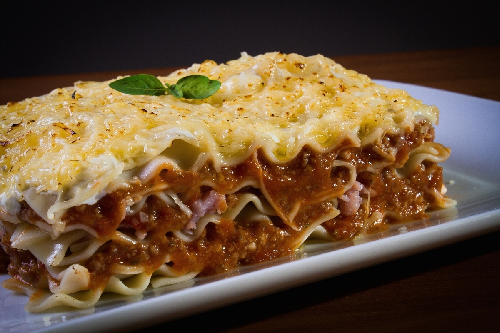

World's Best Lasagna

Criador: rawpixel.com | Crédito: rawpixel.com
This lasagna recipe takes a little work, but it is so satisfying and filling that it's worth it!
Dive into the rich flavors of this beloved lasagna. The secret is in the sauce: a robust blend of crushed tomatoes,
tomato paste, and two kinds of meat (sausage and beef). This savory sauce is layered between tender pasta, a creamy
ricotta filling, and generous amounts of mozzarella and Parmesan, all baked until golden and bubbling.
Making lasagna can be time-consuming, but the results are well worth the wait. You'll find a detailed ingredient
list and step-by-step instructions in the recipe below:
Ingredients
- Meat: This super meaty lasagna has sweet Italian sausage and lean ground beef.
- Onion and Garlic: An onion and two cloves of garlic are cooked with the meat to add tons of flavor.
- Tomato products: You'll need a can of crushed tomatoes, two cans of tomato sauce, and two cans of tomato paste.
- Sugar: Two tablespoons of white sugar add subtle sweetness and enhance the flavor of the sauce.
- Spices and Seasonings: This lasagna recipe is flavored with fresh parsley, dried basil leaves, salt, Italian seasoning, fennel seeds, and black pepper.
- Lasagna noodles: Use store-bought or homemade lasagna noodles.
- Cheeses: Parmesan, mozzarella, and ricotta cheese make this lasagna extra decadent.
- Egg: An egg helps bind the ricotta so it doesn't ooze out of the lasagna when you cut into it.
Home